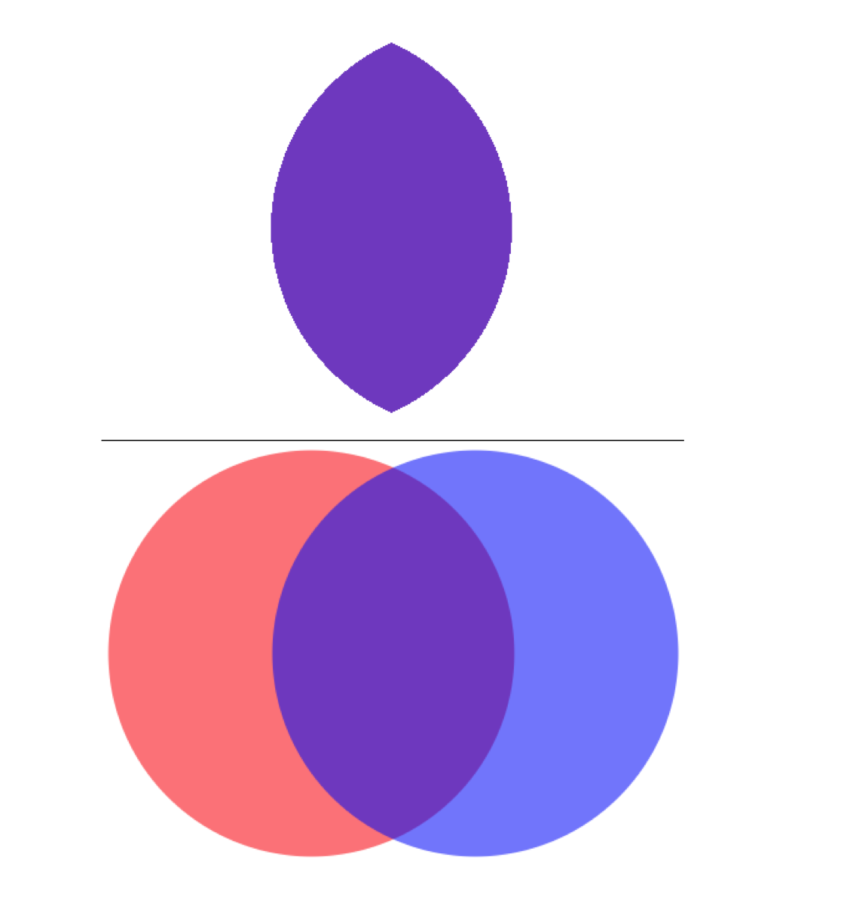
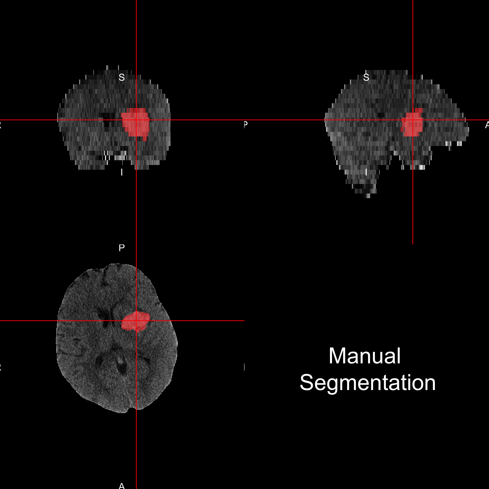
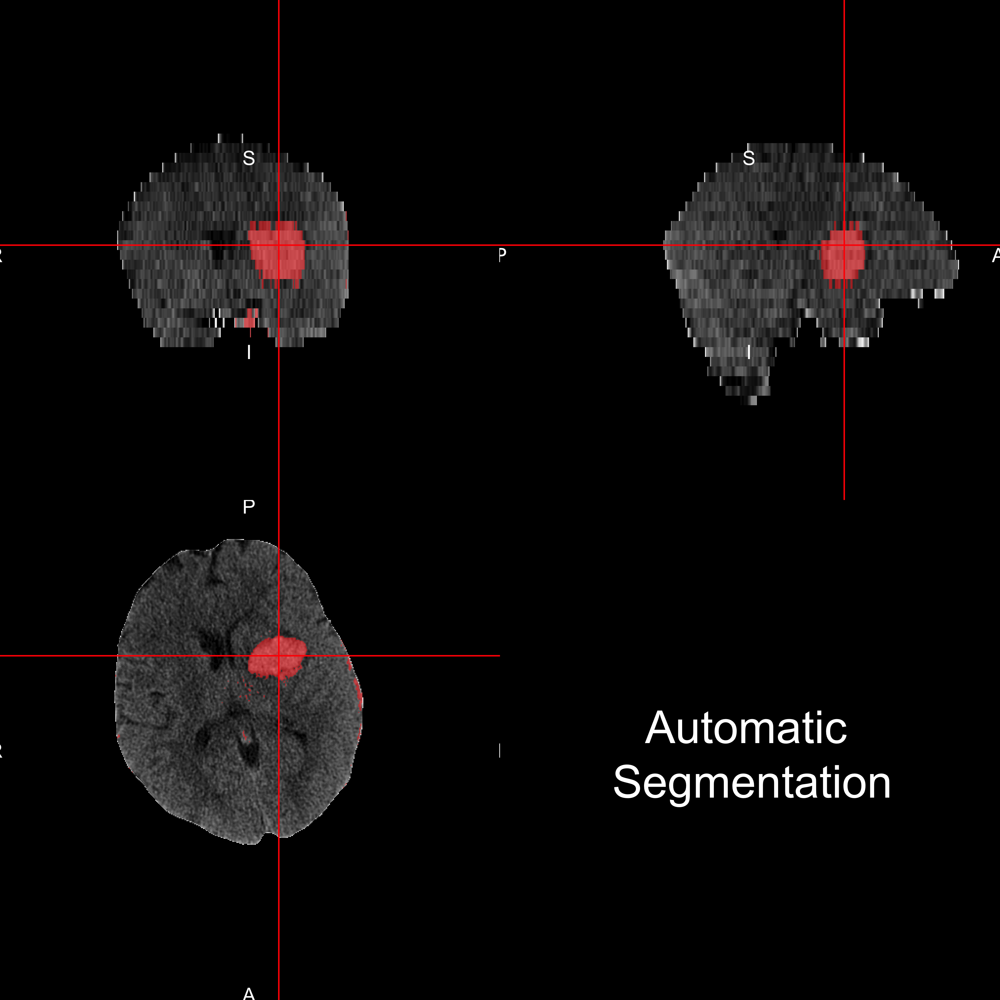
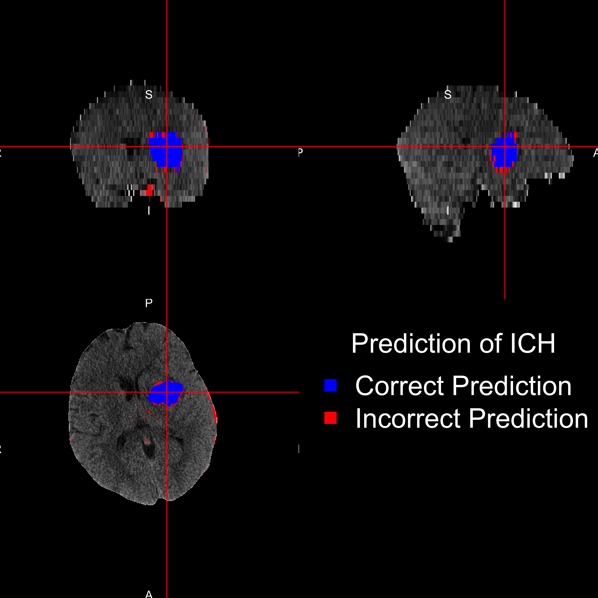
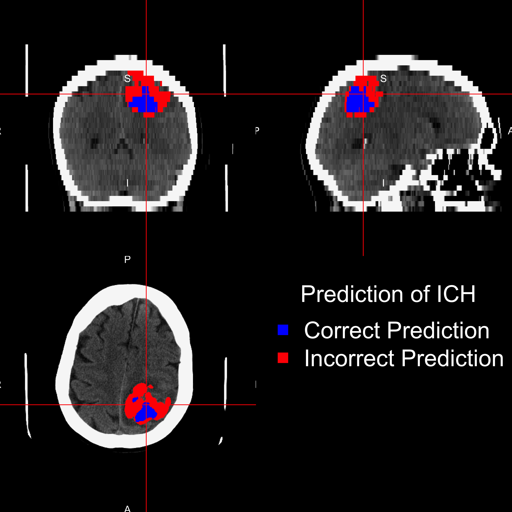

- When a blood vessel ruptures into
- tissue: intracerebral hemorrhage (ICH)
- ventricles: intraventricular hemorrhage (IVH)
- ≈ 13% of strokes
http://www.heartandstroke.com/site/c.ikIQLcMWJtE/b.3484153/k.7675/Stroke__Hemorrhagic_stroke.htm
January 13, 2015
http://www.heartandstroke.com/site/c.ikIQLcMWJtE/b.3484153/k.7675/Stroke__Hemorrhagic_stroke.htm
J. P. Broderick, T. G. Brott, J. E. Duldner, et al. "Volume of intracerebral hemorrhage. A powerful and easy-to-use predictor of 30-day mortality." In: Stroke 24.7 (1993), pp. 987-993.
S. Davis, J. Broderick, M. Hennerici, et al. "Hematoma growth is a determinant of mortality and poor outcome after intracerebral hemorrhage". In: Neurology 66.8 (2006), pp. 1175-1181.
L. C. Jordan, J. T. Kleinman and A. E. Hillis. "Intracerebral hemorrhage volume predicts poor neurologic outcome in children". In: Stroke 40.5 (2009), pp. 1666-1671.
S. Tuhrim, D. R. Horowitz, M. Sacher, et al. "Volume of ventricular blood is an important determinant of outcome in supratentorial intracerebral hemorrhage". In: Critical care medicine 27.3 (1999), pp. 617-621.Standard HU Ranges:
Let \(y_{i,j}\) be the presence / absence of ICH for voxel \(j\) from person \(i\). \[ \text{logit}\left(y_{i, j}\right) = \beta_0 + \sum_{k= 1}^{p} x_{i, j, k}\beta_{k} \]
| Overall | |
|---|---|
| Age (Mean (SD)) | 60.7 (11.2) |
| Gender = Male (%) | 77 (68.8) |
| Diagnostic ICH Volume (Mean (SD)) | 37.7 (20.2) |
| Diagnostic IVH Volume (Mean (SD)) | 3.2 (6.3) |
CT scans from MISTIE II trial. 
For each validation scan we can calculate the following 2-by-2 table, where the cells represent number of voxels and a corresponding Venn diagram:
| Manual | |||
| 0 | 1 | ||
| PitCH | 0 | TN | FN |
| 1 | FP | TP | |
We calculate the Dice Similarity Index (DSI): \[ \definecolor{red}{RGB}{255,0,0} \definecolor{blue}{RGB}{0,0,255} \definecolor{purple}{RGB}{128,0,128} \definecolor{blac,}{RGB}{0,0,0} \frac{ \color{purple} 2 \times \# \text{TP} }{ \color{purple} 2 \times \#\text{TP} \color{black} + \color{red} \text{FN} \color{black} + \color{blue} \text{FP}} \]




